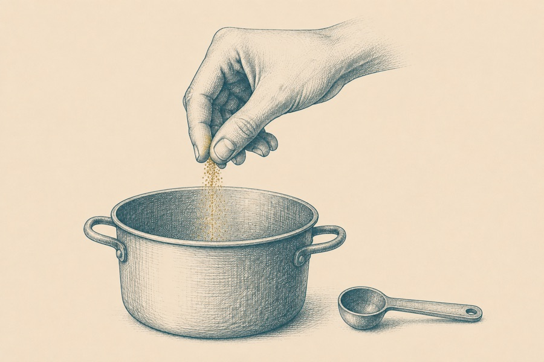

Да-да, вот он, этот пресловутый «страх белого листа», вводящий в ступор любого новичка, а бывает, что и опытного. Что ж, задача этой главы — спокойно и последовательно наметить систему координат, чтобы белый лист превратился в перечень довольно конкретных и приземленных вопросов: во-первых, чему мы учим и какова цель будущей программы?
Во-вторых, кого мы учим — каков портрет будущего студента? В-третьих, что будет непосредственным результатом обучения, что конкретно студент сделает в финале программы; в-четвертых, сколько времени нам нужно, чтобы этот результат был реально достижим.
Навык честно и вдумчиво отвечать на эти вопросы — это и есть фундамент той самой методологической операционной системы мышления, о которой мы уже сказали в самом начале.
02Навык, а не знание
Навыкоориентированная программа
✦
Что ж — самое время вбить первый колышек посреди заснеженного поля, ответив себе на вопрос: в чем цель нашего обучения? Как ты уже знаешь, взрослый человек, выбирая обучение, хочет, чтобы оно приносило ему пользу в решении ежедневных задач, то есть было применимым и прикладным. Внимание, вопрос, будет ли для современного взрослого, применимыми и прикладными 20 часов лекций и 350 страниц дополнительной литературы? Будет ли он пользоваться тем, что просто прослушал и прочитал (даже если допустить, что прослушал все и читал крайне внимательно)? Выражусь аккуратно: это крайне маловероятно.
Если мы хотим, чтобы у нашего студента произошел контакт между нашим курсом и его реальной жизнью, мы должны озаботиться тем, чтобы сделать программу — навыкоориентированной. То есть — с этой секунды, формулируя цель обучения, мы будем иметь в виду необходимость сформировать НАВЫК.
Теперь: прежде чем начать формулировать, было бы здорово, выяснить, чем отличаются навыки от всего остального. Поехали, расставлять точки над «i».
Знаниея проинформирован. Я прочитал рецепт борща — но это не значит, что я его сварю.
Умениея делаю по шаблону: у меня есть инструкция — и ровно в её рамках я способен действовать.
Навыкя действую уверенно и стабильно в разных ситуациях, понимая принцип — уже без шаблона1.
Бытовой пример

Когда я впервые готовил кашу, я спросил у мамы: а сколько соли добавлять? Она говорит: ну, на глаз, на вкус.
Приступ обморочной козы случился у меня ровно на этом месте: подожди, что значит «на глаз»? Скажи конкретно — пол ложки, целую? Столовую или чайную? …
К чему это рассказываю: тот, кто уже владеет навыком в совершенстве — может «ориентироваться по вкусу». А тому, кто только формирует умение, нужна чёткая, внятная инструкция: «сколько вешать в граммах».
1 Серьезный академический философ может здесь возразить, что разделение знаний, навыков и умений некорректно, потому что с точки зрения древнегреческой философской традиции знание без умения и навыка не является знанием. Что ж, в свое оправдание скажем: разделить эти понятия нам необходимо на данном этапе работы, чтобы научиться формулировать цель обучения предельно конкретным образом. Как именно — скоро выясним.
03Цель обучения
Что такое цель обучения
✦
Итак, мы подошли вплотную к вопросу, что же такое цель обучения?
Определение
Цель обучения — это наш замысел о том, что человек будет уметь по итогам программы, и наш ответ на вопросы: где и как он будет этим пользоваться.
Почему начинаем именно с цели? Во-первых, она задаёт маршрут: мы точно понимаем, к чему должны прийти. Во-вторых, все дальнейшие структурные решения (форматы, скорость движения и т.д.) будут упираться в неё. В-третьих, мы должны чётко ответить потенциальным студентам, чему именно планируем их учить. Это важно как с методологической, так и с маркетинговой и продуктовой точек зрения.
Мы можем выделить три ключевых признака хорошо сформулированной цели обучения:
Признак 1
Глагол, указывающий на умение или навык
Немного занимательной лингвистики: нам нужны глаголы совершенного вида (помнишь уроки русского языка в школе?), описывающие завершенное действие:
сваритьдоехатьсмонтировать
Я могу/умею сварить борщ.
Я умею/могу/знаю, как доехать на велосипеде из точки А в точку Б.
Я могу/умею/способен смонтировать видео из нескольких кусков.
Такие глаголы — хороший маркер, что мы движемся в правильном направлении, при формулировании цели обучения.
Признак 2
Содержание
Детализированное описание — чему конкретно наш студент научится.
«Ты научишься проявляться» — плохое описание цели, потому что совершенно неясно, что значит слово «проявляться»? Как это выглядит? По каким параметрам мы сможем обнаружить наличие этого навыка? Какое физическое действие студента нам сможет об этом сообщить?
«Ты освоишь базовые навыки публичного выступления» — окей, это уже лучше; здесь мы по-крайней мере можем себе представить сцену, микрофон и человека на ней, который что-то говорит. Но все еще мало конкретики: чтобы ее добавить, нам необходим третий признак.
Признак 3
Контекст
Где и в каких обстоятельствах наш студент будет пользоваться полученным навыком?
Как не стоит«Вы обучитесь публичным выступлениям». Каким именно выступлениям? Где? Онлайн или офлайн? Для чего?
Как можно«На этом курсе вы научитесь успешно защищать свои проекты перед холодной и скептически настроенной онлайн-аудиторией в формате 10-минутных питчей». Йес? Понимаешь, что такое конкретность содержания и контекста?
04Три примера
Три примера, чтобы стало совсем наглядно
✦
Музыка
По итогам года обучения студент будет способен чисто сыграть двумя руками несложную композицию в стабильном темпоритме, чтобы уверенно выступать на камерных мероприятиях, перед близкими.
Бизнес · переговоры
По итогам программы наши выпускники в состоянии проводить деловые переговоры с тёплыми, доброжелательно настроенными клиентами по единой, отработанной модели и стабильно доводить их до сделки.
Самопрезентация
Выпускник курса способен уверенно презентовать себя в блиц-формате (до 60 секунд) на деловых мероприятиях, нетворкинг-сессиях, при устройстве на работу.
05Практика
Рабочая тетрадь
Сформулируй цель обучения
1. Сформулируй цель своей будущей программы, используя 3 признака, которые мы обсудили в этой главе: подбери точный глагол → опиши содержание навыка → добавь детали контекста.
2. Теперь распиши цель одного урока внутри программы — без чрезмерной ответственности: просто потренируйся в точности формулировок на меньшем масштабе.
3. Прочти формулировку кому-то из друзей или коллег и попроси пересказать её одним предложением по форме: «Правильно ли я понял: по итогам твоего обучения человек научится…» Насколько совпал его пересказ с тем, что ты задумал? Если возникли разночтения, двойные/тройные интерпретации или пришлось додумывать от себя — это сигнал переформулировать и подобрать более точные слова.
4. Отрефлексируй: что было легко, где возникли трудности? С глаголом? С контекстом?
Ответы сохраняются в этом браузере автоматически. Все задания книги собраны в рабочей тетради — её можно открыть отдельно, заполнить целиком и скачать одним PDF.
Не стоит переживать, если не удается подобрать точные слова с первого раза: мы учимся по-новому думать! Сложности, «скрипение» мозгов — это естественно и ожидаемо! Как я уже говорил — мы устанавливаем себе новую операционную систему мышления. Освоить управление ей — это задача, требующая времени и внимания.
Раздел 6
Кого учим: портрет студента
✦ ✦ ✦
01Зачем портрет
Ну что ж, дорогой мой друг и коллега, мы продолжаем разбираться с самыми базовыми вопросами, которые помогут нам начертить карту будущего образовательного проекта. С целью обучения успешно разобрались. Ура! Теперь поговорим о том, кого мы к этой цели поведём.
Ты, вероятно, уже обратил внимание, что автор книги — знатный душнила. Если нет, что ж — сейчас моя душнота начнет разворачиваться во всей своей красе.
Итак, мы должны четко понимать: чем точнее, детальнее и подробнее мы опишем портрет потенциального студента, тем легче нам будет дальше работать с программой, тем больше определённости появится в отношении формата и длительности программы: какие образовательные технологии внутри проекта мы будем использовать — а какие нет.
Выделим особо
маркетинговый портрет целевой аудитории и методологический портрет будущего студента МОГУТ НЕ совпадать. Могут совпадать — а могут и нет.
02Почему это важно
Почему это важно?
✦
Представим обратную ситуацию: мы наплевали на портрет студента, ничего о нём не знаем и сделали курс по самопрезентации «для всех и каждого». Первое, с чем мы вероятнее всего столкнемся: программа без определенного портрета студента и продаваться, скорее всего, будет с трудом. Но допустим нам повезло — программа продалась: и вот в одной группе собрались 35-летний руководитель отдела IT-компании, чиновница из министерства сельского хозяйства 59 лет, женщина-психолог 45 лет, 18-летний студент-первокурсник и бьюти-блогерка 24 лет.
Всех учим по одной программе, даем одни и те же упражнения, используем одни и те же метафоры... Что получим? Очень неравномерное движение и поведение группы: одному скучно, другому сложно, третий вообще не понимает, что он здесь делает, четвертый задает 356 уточняющих вопросов, пятый стонет: «Господи, давайте уже скорее дальше?!»
Что с этим делать? Очерчивать строго и конкретно, кого именно мы собираемся обучать. Давай посмотрим, как изменится программа курса в зависимости от портрета студента.
Пример 1
Итак, у нас есть руководитель среднего звена IT-компании, которого интересуют навыки презентации. Что мы про этого человека понимаем? Ему, вероятно, от 30 до 36 лет, хорошо владеет английским, очень занят и не готов изучать тяжеловесные материалы: значит ему нужны эффективные шаблоны из серии «взял и применил».
Также, мы можем предположить, что ему ближе всего будут примеры и упражнения, связанные непосредственно с его рабочим контекстом: например, отработка практики выступлений на воображаемой «планёрке», разбор кейсов из реальной корпоративной практики, возможность отрепетировать квартальный отчет перед руководством и т.д.
Что мы получим, если будем строить программу, отталкиваясь от портрета студента? Во-первых, нам не придется тратить лишних сил, чтоб «замотивировать» его учиться: сама структура программы будет демонстрировать нашему айтишнику прямое соответствие курса его актуальным профессиональным задачам. Во-вторых, нам самим будет очень легко понять, какие инструменты и форматы обучения стоит здесь использовать, а какие — нет.
Пример 2
А теперь представим, что наша будущая студентка — женщина-психолог 40+. Ее тоже интересуют навыки презентации. Но есть нюанс: она боится или с трудом пользуется социальными сетями, хотя понимает: для развития практики и привлечения клиентов ей это необходимо.
О чем это нам говорит? О том, что сначала нам нужно будет обязательно уделить время работе с ее состоянием и убеждениями по поводу соцсетей и публичности (особенно, если учесть, что психологическая этика — штука строгая и на многих специалистов оказывает парализующее воздействие); далее ей, скорее всего, нужны будут конкретные алгоритмы: как и о чем говорить в сториз, о чем в рилз, как управлять вниманием аудитории во время прямых эфиров… Вроде бы тема та же: искусство презентации! Но сколько нюансов, когда мы внимательны к портрету студента и его контексту.
В этом месте, вероятно, ты уже готов схватиться за голову с криком: «Да как же этот самый портрет студента составить? По каким критериям?» Выдыхай: вот тебе 8 параметров, по которым ты сможешь это сделать.
03Восемь параметров
Восемь параметров портрета
✦
Параметр 1
Роль
Кто этот человек с точки зрения своего социального и профессионального статуса: руководитель, предприниматель, преподаватель, школьник, студент, рабочий, чиновник?
Параметр 2
Исходный уровень
Начинающий или продолжающий? Учим с нуля, с азов — или он уже продвинутый, а может — опытный? Согласись, для проектирования программы это немаловажно.
Параметр 3
Задачи
Какие задачи он решает в своей жизни? И, что более важно, в решении каких задач мы будем ему помогать: что конкретно у него должно начать получаться? У женщины-психолога это аутентичные, комфортные для нее и привлекательные для аудитории сторис; у руководителя IT-отдела — лаконичные, ясно выстроенные, уверенные и энергичные презентации.
Параметр 4
Ограничения
В какое время суток будущий студент готов учиться, а в какое нет; сможет ли он принимать участие, например, в групповых онлайн-встречах, которые будут проходить по фиксированному графику или же ему необходим гибкий график? Сколько часов в неделю сможет выделять на учебу? Кроме того — ограничения могут касаться возраста и состояния здоровья потенциальных студентов.
Параметр 5
Мотивация и риски
Мотивация — это ответ на вопрос, зачем ему то, что мы предлагаем: насколько студент сам осознает свою потребность в обучении или нет? (например: корпоративные программы часто создаются и проводятся по инициативе руководства, а для сотрудников обучение носит «добровольно-принудительный» характер. Мы обязаны это понимать и учитывать еще на старте создания курса).
Каковы риски в связи с этим: что может помешать процессу обучения, при каких условиях мы можем «потерять» нашего ученика?
Параметр 6
Язык и метафоры
Какой специфический язык/профессиональный сленг нам поможет в работе с этим студентом? Какие примеры ты будешь приводить? К каким авторитетам апеллировать? Какие истории рассказывать? Для психолога, очевидно, подойдут цитаты из Фрейда, Юнга, ссылки на статьи по физиологии стресса. А для военного? Для регионального чиновника? Для мамы в декрете?
Параметр 7
Формат
Какие форматы обучения этому человеку подойдут, а какие — нет? Скажем, мама в декрете, возможно, обрадуется возможности пообщаться и получить поддержку в небольшой группе, а большой начальник из госструктуры может оказаться категорически не готов делать упражнения на развитие дикции и техники речи под взглядом посторонних людей не из его круга.
Параметр 8
Этика и глубина трансформации
Наконец, финальный, очень тонкий и деликатный вопрос: что этически допустимо и что нет для нашего потенциального студента? На какую глубину мы вообще можем его приглашать? В какую степень уязвимости? С менеджерами среднего звена мы вряд ли будем касаться вопросов идентичности и глубинных ценностей. А с основателем компании, для которого влияние на большие аудитории — вопрос комплексный и стратегический, глубина работы может быть совсем другой.
04Практика
Рабочая тетрадь
Нарисуй портрет своего студента
1. Прямо сейчас, не откладывая, набросай карточку возможного студента по восьми параметрам. Отнесись к задаче максимально легко, как к игре-эксперименту. Если ты никогда не делал собственных программ и каждый параметр ставит тебя в тупик — включи воображение и пофантазируй: «Какого человека я хотел бы увидеть на месте своего студента?» Потом проверишь, существуют ли такие люди в природе и заинтересуются ли они продуктом — это гипотеза, которую можно тестировать. А если опыт уже есть — опиши подробно того студента, с которым тебе комфортнее всего, которого ты рад встречать на своих программах. Пусть именно этот образ притягивает в программу таких же людей.
2. Проживи день из головы потенциального студента. Посмотри на экране внутреннего кинотеатра: как он просыпается, как завтракает, едет на работу трамваем, на такси — или никуда не едет, потому что фрилансер? Какая у него занятость, что ему тяжело, что легко? Чем он занят в свободное время, есть ли оно у него? Ответы по восьми параметрам всплывут на поверхность сами собой. Это очень творческое исследование.
3. Самопроверка: отложи карточку на день, затем перечитай её глазами постороннего человека. Рисуется ли за строчками живой, реалистичный человек — или это пока абстракция? Первое приближение часто получается общим и туманным. Найди два-три места, где можно уточнить портрет, и задай себе наводящие вопросы: «А всё-таки — какого он возраста? Какой роли? С какими задачами?»
4. Теперь сведи вместе цель обучения и портрет студента и понаблюдай, что происходит на пересечении этих двух описаний. Уже здесь, вероятнее всего, начнут появляться идеи про структуру и формат — ты можешь зафиксировать их на отдельных стикерах, но не спеши «прибивать гвоздями» эти решения, мы обязательно дойдем до предметного обсуждения вопросов структуры и форматов, поэтому все может еще 10 раз поменяться. ;Р Главное, мы проделали уже очень важную работу: у нас есть четко описанная цель обучения и портрет студента. Ура. Движемся дальше!
Ответы сохраняются в этом браузере автоматически. Все задания книги собраны в рабочей тетради — её можно открыть отдельно, заполнить целиком и скачать одним PDF.
Раздел 7
Результат обучения
✦ ✦ ✦
01Цель и результат
Во время чтения этой главы ты, возможно, меня возненавидишь. Потому что здесь концентрация моей дотошности достигнет внушительных (но не предельных! ;Р) значений. Почему? Потому что нам нужно еще договориться о результатах обучения.
Так, секундочку, мы же только что говорили о целях, да? Чем результат может отличаться от цели?! Это синонимы, очевидно же! Так вот, оказывается, нет. Давай разбираться.
Цель — это наш замысел о том, что человек будет делать за пределами программы: как он будет пользоваться полученными навыками в своей собственной жизни. Выступать перед советом директоров, участвовать в конкурсе поваров, играть в компании друзей на фортепиано, вести социальные сети и привлекать клиентов.
А хорошо — а результат тогда? А результат — это то, как мы поймем и проверим, что обучение прошло успешно. Результатом будут конкретные действия студента в финале обучения. Действия, глядя на которые, мы сможем с чистой совестью сказать: да, это именно те результаты, которые мы обещали. Мы этому учили, и вот человек научился.
Ключевая мысль
Результат — это материальное, конкретное, измеримое действие студента в финале программы, благодаря которым в том числе становятся достижимы и выполнимы цели обучения.
И результат мы не просто описываем — мы его проектируем. Мы закладываем с самого начала — что хотим увидеть в финале курса: успешное публичное выступление по заданному таймингу и структуре; сыгранное музыкальное произведение определенного формата и сложности; связанный шарф по оговоренной технологии; 10 опубликованных в личном блоге рилз, записанных с учетом ряда требований… И так далее.
02Восемь критериев
Восемь критериев качественного описания результата
✦
Ну, так ты уже чувствуешь запах жареного, да? Чтобы спроектировать результат, нам снова нужны критерии. Зачем? Во-первых, чтобы чётко согласоваться с будущими студентами и/или заказчиками относительно их ожиданий и говорить с ними на одном языке. Во-вторых, чтобы обучение было честным: не поле догадок, надежд и туманных предположений, а ясная траектория — к чему идем. В-третьих, если мы решим проводить сертификацию или выставлять оценки, нам нужно на что-то опираться: почему одному студенту сертификат выдаем, а этому нет.
Критерий 1
Утвердительная формулировка
Человек «сварил борщ по заданному рецепту». Не «научился не пересаливать», а прямо сварил (что ты хихикаешь! Лучше тебе не знать, как люди иногда результаты формулируют! «Он научится не волноваться перед выступлением» — что это, блин, значит? Что там будет происходить вместо волнения? Как мы это узнаем и проверим?!) Никаких отрицаний в описании результата быть не должно. Из формулировки мы должны четко понять: вот он сделал, и у него получилось.
Критерий 2
Конкретное действие
Вот сейчас специально для поклонников soft skills (я сам поклонник 😀) приведу пример. «Научился бережно и безопасно общаться» — это туманно и не конкретно. Вместо этого: «провел сложные переговоры с негативно настроенным клиентом, снизил уровень напряжения, используя навыки подстройки и ведения, вывел на подписание контракта». Вот это ясное действие.
Критерий 3
Контекст
Где именно, как именно, при каких обстоятельствах? Самопрезентация — в лифте: уложиться за 60 секунд. Или: представить продукт на шумной конференции, в рамках большого выставочного форума. Почему контекст важен? Потому что из конкретных обстоятельств сразу понятно, какие блоки и темы должны быть внутри обучения, чтобы результат стал возможным.
Критерий 4
Личная ответственность
Результат находится в зоне контроля учащегося на 100%. Мы не можем обещать результат, который касается двух человек, причём один из них в программе участия не принимает.
Нечестный вариант«В финале нашего курса вы счастливо выйдете замуж». Процесс заключения брака, насколько мне известно, предполагает волеизъявление другого человека, поэтому делать такое обещание — как минимум некорректно, а вообще-то недобросовестно.
Что можно вместо этого«В финале обучения вы легко проведете small-talk с тремя незнакомыми мужчинами на закрытом мероприятии». А уж дойдет дело до замужества или нет — не в нашей власти.
Критерий 5
Порог качества
При каких условиях результат будет удовлетворительным? Например: ученик исполнит на фортепиано композицию продолжительностью до 10 минут, сыграет ее двумя руками, в нужном темпе и чистом ритме, допустив не более 3 ошибок. Вот он, порог, по которому мы понимаем: да, это то, что мы хотели.
Или: студент выступит перед условным «советом директоров» по определенной структуре, уложится в тайминг до 5 минут, будет поддерживать зрительный контакт с аудиторией, сохранять ресурсное состояние и успешно обработает два неудобных вопроса от зрителей, используя полученные на курсе техники.
Критерий 6
Сенсорность
Как мы увидим, услышим и прочувствуем обещанный результат? Этот критерий очень важен, поскольку связывает результат с реальностью: наличие или отсутствие навыка измеряется поведением! Не рассуждением, не письменным описанием, не фантазией. Поведением. И поэтому, проектируя курс, мы специально продумываем некоторый формат, который позволит наглядно убедиться и засвидетельствовать, что человек на уровне поведения демонстрирует навык приготовления яичницы, игры на фортепиано, проведения сложных переговоров и т.д.
Критерий 7
Экология и этика
Этот критерий тоже довольно конкретен, несмотря на кажущуюся сложность. Фактически, здесь ты отвечаешь сам себе на следующие вопросы: какой ценой результат будет достигнут? Как процесс обучения отразится на здоровье студента (не только физическом, но и психическом), на его отношениях с близкими, на его репутации?1 Насколько чисты и безопасны те инструменты, которые я закладываю в обучение? Скажем: если я на курсе целенаправленно учу студентов манипулировать другими людьми — какие последствия я таким образом создаю в жизни выпускников и тех, с кем они будут взаимодействовать? Несу ли я ответственность за эти последствия? Далеко не все авторы курсов вообще считают для себя необходимым задаваться такими вопросами.
Критерий 8
Масштаб
Насколько обещание соразмерно тому, как реально организован курс? Вот у нас онлайн-программа по публичным выступлениям на три месяца — можем ли мы обещать, что человек научится выступлениям офлайн перед тысячными залами? Честнее сказать: в рамках нашей онлайн-программы вы точно освоите навык онлайн-презентации своего продукта.
1 Были в свое время программы, где ведущие давали крупным руководителям задание выйти в неглиже на центральную улицу и прочесть стихи, чтобы таким образом «навсегда освободиться от страха публичных выступлений»… Насколько экологичны такие практики для репутации ученика, его отношений с семьей и бизнес-партнерами? Насколько они психологически безопасны? Вопрос открытый.
03А как же soft skills
А что с мягкими навыками?
✦
Возможно, в этой точке у тебя появится вопрос: хорошо, эти восемь критериев понятны и подходят для строго-навыковых, технологических программ, где результаты можно «померить линейкой». А что делать с мягкими навыками — неужели там всё то же самое? Представь себе, да. Выше я уже приводил примеры из мягких ниш, но давай я еще раз зафиксирую: по итогам любого даже трижды soft-обучения мы можем продумать процедуру, в которой студенты покажут, чему конкретно они научились, как именно используя те инструменты, обучались.
Бережная коммуникация
Студент в финале программы пишет несколько писем (другим участникам, например), в которых использует конкретные техники (например, обратную связь высокого качества, я-сообщения, благодарность) — и получает ответы, по которым можно оценить, как изменились в лучшую сторону отношения этих людей.
Эмоциональный интеллект
Ученик проводит несколько учебных диалогов и фиксирует по критериям, какие изменения эмоций он наблюдал в себе и в собеседниках, после чего заполняет и присылает документ, в котором описано, как он замечает телесные и мимические сигналы, как интерпретирует и как меняет свое поведение, воздействуя на собственное состояние и состояние партнера.
Как ты, надеюсь, замечаешь восемь критериев описания результата помогают создать максимально ясную, честную и эффективную программу, пройдя которую студент действительно сверит точку А и точку Б, увидит разницу, порадуется своим успехам, а мы порадуемся вместе с ним.
А еще, если уж говорить о «маркетинге здорового человека»: результаты в виде конкретных действий студентов по итогам обучения — это отличный материал, который можно оформить в кейсы (взяв предварительно разрешения).
04Практика
Рабочая тетрадь
Спроектируй результат своей программы
1. Рядом с целью обучения и портретом студента — мы уже знаем, чему учим и кого учим — коротко, быстро сформулируй результат: так, как он сам сформулируется.
2. Затем открой восемь критериев и прямо проставь галочки напротив каждого: утвердительная форма, конкретное действие, контекст, личная ответственность, порог качества, сенсорность, экология и этика, масштаб.
3. Самопроверка: прочитай формулировку вслух и спроси себя — смог бы посторонний человек, наблюдая финальную работу студента, однозначно сказать: «Да, вот он, обещанный результат»? Если нет — внеси больше конкретики, детализации и точности.
4. И важный момент для рефлексии: какой из критериев находится у тебя в слепой зоне? Где ты начинаешь тупить и спотыкаться? Зафиксируй это место и вернись к нему через день со свежей головой — как правило, точное слово находится.
Ответы сохраняются в этом браузере автоматически. Все задания книги собраны в рабочей тетради — её можно открыть отдельно, заполнить целиком и скачать одним PDF.
Спасибо за терпение и внимание. Да, это самая душная часть первой главы — и самая фундаментальная: именно прописанный результат делает обучение честным.
Раздел 8
Сроки обучения: как соотнести обещания со временем?
✦ ✦ ✦
01Формула сроков
Еще один тонкий и важный вопрос, который вообще-то про нашу профессиональную честность и добросовестность. Вопрос этот звучит так: на какие критерии мы будем опираться, прежде чем решим, сколько будет длиться наша программа?
Я не раз слышал от ушлых инфобизнесменов разговоры такого характера: «сейчас не в тренде долгосрочные программы, их плохо покупают, поэтому курс должен длиться не больше 6 недель». Что не так с этой позицией? В ней вообще не идет речь об эффективности обучения как такового и совершенно игнорируется вопрос связи между темой курса, обещанными результатами и необходимым временем для формирования заявленных навыков. Поэтому мы будем думать о сроках обучения иначе.
Формула
Чем более сложный, комплексный результат мы обещаем, тем больше «подходов к снаряду» должны получить студенты внутри программы, и тем больше обратной связи на эти «подходы» они должны получить.
Если я попробовал один раз и у меня получилось — это ещё не навык, это успешная проба. Она еще очень «сырая» — без закрепления ее смоет в течение 2-3 дней. Прочный же навык создаётся количеством повторений.
Пример из практики автора
Я хорошо помню, как много лет назад готовил инструментальные партии на гитаре и фортепиано к записи на студии: часто бывало так, что первый же репетиционный дубль бывал довольно успешным — как-то на кураже, спонтанно удавалось неплохо сыграть. Но уже на второй попытке неизбежно лез всякий «мусор»: то ритмически неровно, то лишнюю струну или клавишу зацеплю, то пальцы начнут потеть и заплетаться. И требовались десятки, а то и сотни попыток, прежде чем мне удавалось довести партию до того состояния, когда ее действительно можно записывать.
Это и есть то необходимое число повторений, прежде чем возникает устойчивый навык вместо «просто повезло».
02Форматы по срокам
Сроки и форматы, честные к обещаниям
✦
Однако, это было лирическое отступление. Вернемся к нашему вопросу и проговорим более конкретно: какие сроки и форматы обучения будут честно соответствовать тем или иным обещаниям.
Формат 1
Воркшоп · 1–3 часа
Один шаблон, одна модель, один алгоритм — и черновой опыт «я сделал, у меня получилось». Например, знакомим людей с одной конкретной моделью самопрезентации, они её пробуют и получают обратную связь.
Формат 2
Тренинг · 1–2 дня
Несколько простых навыков. В контексте публичных выступлений: набор упражнений по технике речи с первыми видимыми результатами: вот разжалась и стала лучше открываться нижняя челюсть, вот стала чище и цепче артикуляция, вот дыхание вместо подключичного стало диафрагмальным. Прочувствовали, услышали, зафиксировали. Добавили сюда модель одноминутной самопрезентации для нетворкинга, плюс формат профессиональной обратной связи коллегам. В финале тренинга проверили, насколько изменилось общее впечатление от человека, когда начал говорить о себе более структурно и емко, при этом с более высоким качеством голоса и речи.
Формат 3
Спринт · 1–2 недели
Одну модель довести до совершенства, до блеска: несколько раз снять себя на камеру, получить обратную связь, переделать с учётом замечаний — докрутить. На выходе — записанная чистовая самопрезентация, которую можно, что называется, и в пир, и в мир.
Формат 4
Программа · 4–6 недель
В размеренном режиме, без паники и спешки, собираем несколько микронавыков в один комплексный. Переговоры: управление своим состоянием, подстройка, работа по протоколу, завершение и переход к сделке. Появляется свобода: человек уже не просто пользуется одной моделью — он импровизирует, переключается, добавляет от себя некоторые «нюансы», начинает уверенно говорить на языке новых понятий и принципов.
Формат 5
Долгосрочная программа · 8–12 недель
Здесь мы действительно можем создать комплексный навык1, можем организовать такие форматы и объемы практики, чтобы студенты не просто научились действовать по шаблону в строго определенных контекстах, но и думать на новом для себя языке, применяя новые для себя подходы и инструменты в различных контекстах, приближенных к «полевым». Скажем, если у нас долгосрочная программа по эффективной коммуникации, то под финал 10-11 недели мы уже можем устраивать полноценные игровые симуляции, где ученики, например, разыгрывают различные сценарии переговоров, переключаясь между ролями «менеджер-коммуникатор», «сложный клиент», «эксперт-наблюдатель», применяя по собственному усмотрению целый спектр принципов, моделей и техник, давая друг другу развернутую профессиональную обратную связь и т.д.
1 Ой, кажется, это новый для нас термин. Не волнуйся, совсем скоро мы разберемся, что такое «комплексный навык».
03Красные флаги
Красные флаги нереалистичных обещаний
✦
Окей, и чтоб два раза не вставать, давай здесь же разберем так называемые «красные флаги»: по каким признакам в рекламе чужого курса мы можем уверенно сказать, что авторы и организаторы дают нам, скажем вежливо, не слишком реалистичные обещания?
Флаг 1
Обещания-существительные
«У вас будет личный бренд», «вы получите высокие продажи». Абстрактно и неточно: кто будет продавать, кому, в каких контекстах, посредством чего, в каком количестве? Существительные вместо глаголов — первый маркер некорректных обещаний. Особенно в сочетании с коротким промежутком времени обучения.
Флаг 2
Внешние факторы, на которые вы не влияете
«Вы измените рынок», «вы построите счастливые отношения». Мы не знаем, как отреагирует рынок на любой, даже самый инновационный, гениально спроектированный продукт. Мы также не можем распоряжаться волей другого человека, потому что отношения — это результат активных действий двух людей.
Как могут выглядеть корректные обещания? «Вы научитесь захватывать и удерживать внимание аудитории — и мы непременно убедимся в этом прямо на курсе, во время практики в мини-группах». «Вы освоите навык глубокого и доверительного диалога — и это может очень благотворно сказаться на ваших отношениях с родными и близкими людьми».
Да, звучит не слишком «кликбейтно», я согласен. Продажники будут предлагать тебе более яркие, более провокационные формулировки, коленом давящие на болевые точки аудитории — это понятно и естественно. Твоя же сложная задача будет заключаться в постоянном поиске баланса между коммерчески успешной рекламой и собственной методологической порядочностью. А начать нужно с того, чтоб хорошенько поговорить с собственной совестью: готов ли ты отвечать репутацией за обещания, которые заведомо невыполнимы или исполнение которых находится вне твоей власти?
Флаг 3
Программу нельзя посмотреть до покупки
Мой любимый пункт. Вот вся эта кокетливая загадочность «у меня авторская методика, о ней узнают только те, кто оплатил» — это прямое указание, что за интригой и туманом либо низкая компетентность, либо откровенное мракобесие под видом «авторской методики». Ни один трезвый, добросовестный профессионал не будет скрывать свою программу. Напротив: проект, созданный профессиональными руками — это гордость её автора, он готов рассказывать о ней бесконечно.
Флаг 4
Нет пространства для практики и повторного опыта
Собственно, ровно затем и нужна программа курса в открытом доступе, чтобы выяснить — предполагает ли она навыковое обучение? Есть ли внутри курса запланированные области для практической работы?
Пример из практики
Попалась мне как-то реклама: «двухдневный тренинг онлайн» — причем, что отдельно порадовало, на вебинарной платформе. Уже смешно: на вебинарной платформе единственный канал связи со спикером — это чат. То есть спикер вас не видит, не слышит, не может пригласить на демонстрацию, не может дать практику для синхронной отработки (а как он проследит — делаете вы или нет?), тем более не может объединить вас в группы для практической отработки. Значит, уже здесь очевидно, что никакой это не тренинг.
И дальше — еще веселее: за два дня потенциальным участникам обещали «построить личный бренд, настроить продажи, привлечь клиентов, переписать шапку профиля и научиться самопрезентации». На этом месте хохот уже мешал мне читать дальше, хотя список обещаний продолжался еще на 7-8 пунктов. То есть человек, который писал текст для лендинга, даже не задумался об адекватности соотношения обещаний и сроков. В общем — не надо так. 😁
04Калибратор
Калибратор: четыре вопроса «да или нет»
✦
Чтобы подойти к соотношению результата и сроков обучения максимально конкретным и прикладным образом, воспользуйся калибратором ниже: просто ответь честно на 4 вопроса.
Вопрос 1
Предполагается ли несколько контекстов применения? (да/нет)
Например, на курсе по самопрезентации мы будем готовить студентов только к «лифтовой» версии? Или еще будем иметь в виду формат для нетворкинга, для светских ужинов, для вечеров благотворительности? Если речь о приготовлении яичницы — мы осваиваем технику только в домашних условиях, или в условиях турпохода тоже? Переговоры только с доброжелательными клиентами? Или — включая конфликтные, «боевые» обстоятельства?
Вопрос 2
Нужны хотя бы три попытки? (да/нет)
Насколько важно, чтобы после первой попытки студент получил обратную связь, повторил еще раз, а потом снова? Предлагает ли твой курс хотя бы 3 таких петли обратной связи?
Вопрос 3
Есть ли зависимые друг от друга шаги? (да/нет)
Скажем, чтобы освоить переговоры, сначала нужен навык подстройки и доверительного контакта, потом — умение держать в голове структуру переговорного процесса, потом — работа с возражениями. Выстраивается ли в твоем продукте такая цепочка навыков, цепляющихся друг за друга?
Вопрос 4
Требуется ли смена поведения и новая привычка? (да/нет)
Разовая акция «попробовал один раз слепить чашку на воркшопе» не создает устойчивого навыка и вымывается из сознания за несколько суток. Есть целый ряд ситуаций — когда это вполне нормально: попробовал новое, получил удовольствие, почувствовал подъем энергии. Отлично, бОльшего нам и не нужно. Но бывают программы, в которых важно добиться изменения привычки. Скажем: на курсе по вокалу преподавателю может быть важным добиться от студентов новой привычки использовать диафрагмальное дыхание «на автомате», бессознательно. Потому что это необходимый минимум для исполнительского профессионализма. Ответь себе на вопрос — насколько для твоей программы важно, чтобы человек по окончании обучения уже не мог по-старому и применял новые алгоритмы поведения свободно, в разных контекстах, может быть, даже бессознательно?
Теперь посчитай количество «да». Одно-два «да» — это формат от короткого воркшопа до недельного спринта. Больше двух — скорее программа 4–6 недель. Три «да» — можешь смело закладывать шесть недель. Четыре «да» — от восьми недель и выше.
05Практика
Рабочая тетрадь
Откалибруй сроки своей программы
1. Пройдись по четырём вопросам калибратора применительно к своей программе и честно посчитай количество «да»: контексты, три попытки с обратной связью, зависимые шаги, смена поведения.
2. Сопоставь результат с типовыми форматами: соответствует ли длительность, которую ты задумал, сложности результата, который ты обещаешь? Если нет — что честнее скорректировать: сроки или обещание?
3. Самопроверка: произнеси вслух фразу «Я обещаю, что за [срок] человек сможет [результат]» — и посмотри на свою программу глазами придирчивого покупателя, по списку красных флагов. Есть ли внутри время на повторения? Нет ли обещаний-существительных и внешних факторов, которыми ты не управляешь?
4. Настрой таким образом линзу своего восприятия: как я делаю чисто, как я делаю честно соотношение между результатами, которые обещаю, и сроками, которые предлагаю.
Ответы сохраняются в этом браузере автоматически. Все задания книги собраны в рабочей тетради — её можно открыть отдельно, заполнить целиком и скачать одним PDF.
Вот мы и подошли к финалу второй главы. Мы поняли, что такое цель обучения и чему мы учим; что такое портрет студента и кого мы учим; каким должен быть результат — и как соотнести его со сроками. Я надеюсь, всё это уже записано в твоей рабочей тетради. Если нет — непременно сделай: это самые фундаментальные основы, с которых начинается наша работа. Пробуй — пусть появятся вопросы и всякое непонимание: чтобы получились содержательные вопросы, нужно первый раз попробовать. С деталями будем разбираться в следующих главах.